Browser testing you can ask for in plain words
Sorify writes and runs website tests for you. You describe what to check. An AI agent writes the test, and Sorify runs it in a real browser. You get a clear pass or fail, with screenshots.
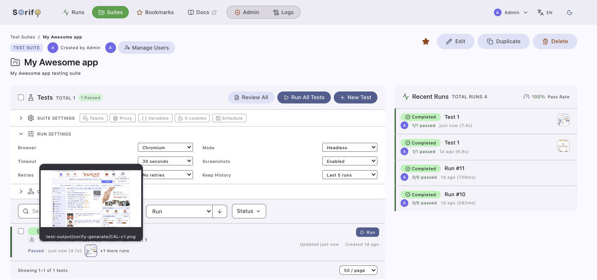
How it works
Four steps, from your request to the result. You never write test code yourself.
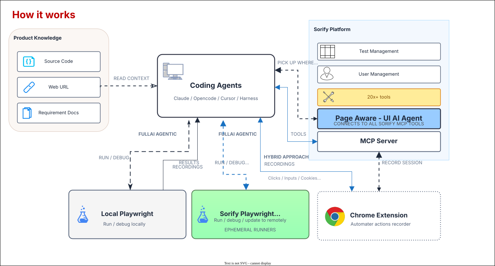
Sorify sits between you and the browser. You say what you want checked, in your own words, and an AI agent turns that into a real test. Sorify then runs the test in a real browser and keeps every result, with screenshots. When something breaks, you hear about it on the dashboard, in Teams, or by email.
-
1
You ask. Type what you want checked, in everyday words. For example, ask it to test your shopping cart.
-
2
The AI agent writes the test. It can read your source code, crawl your site, or learn from a recording of your clicks.
-
3
Sorify runs the test. It runs in a real browser, on demand or on a schedule, and every run is saved with its history.
-
4
You get the result. Pass or fail, with screenshots. If something breaks, you get an alert, and the AI can explain why.
What you get
One place to create, run, and watch your tests, with AI help at every step.
AI test writing
You say what to check. The agent turns that into a real test, then uploads and runs it.
Real browser runs
Playwright runs each test and keeps full logs, history, and pass rates.
Schedules
Run any suite on a timer, on demand, or from your CI pipeline.
Screenshots and healing
Failures come with screenshots, and the AI can explain what went wrong.
Notifications
Microsoft Teams and email alerts when a run finishes or fails.
Cookie and login handling
Reuse logged-in sessions per suite, so tests skip the login steps.
Code coverage
See which parts of your frontend the tests actually covered.
Chrome extension recorder
Click through your site while the extension records. The recording becomes the test, and the AI fills in the details.
Users and roles
Invite teammates, share suites, and control who sees what.
Skills library
Save reusable testing skills and share them with the team.
There is more: admin tools, a page aware dashboard chat, and Japanese, Chinese, and Malay support. See the full list in the README.
A look inside
Everything lives in one dashboard. You can also drive all of it from your terminal.
Control everything from your terminal
Claude, Codex, and OpenCode manage suites, tests, and runs from your local harness.
- Same tools as the dashboard, over MCP
- Low token use, thanks to a lean MCP layer
- Install once as a plugin, no extra setup
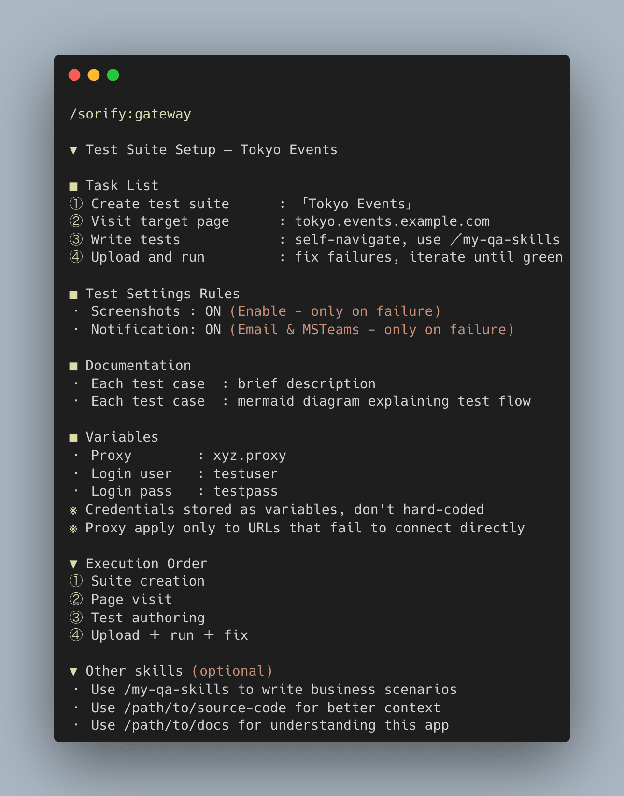
An AI agent inside the dashboard
Chat with an agent that sees the page you are on, and pick up where you left off.
- Bring your own model, any OpenAI compatible one
- Runs around the clock as a background agent
- Hands work over to your local agents
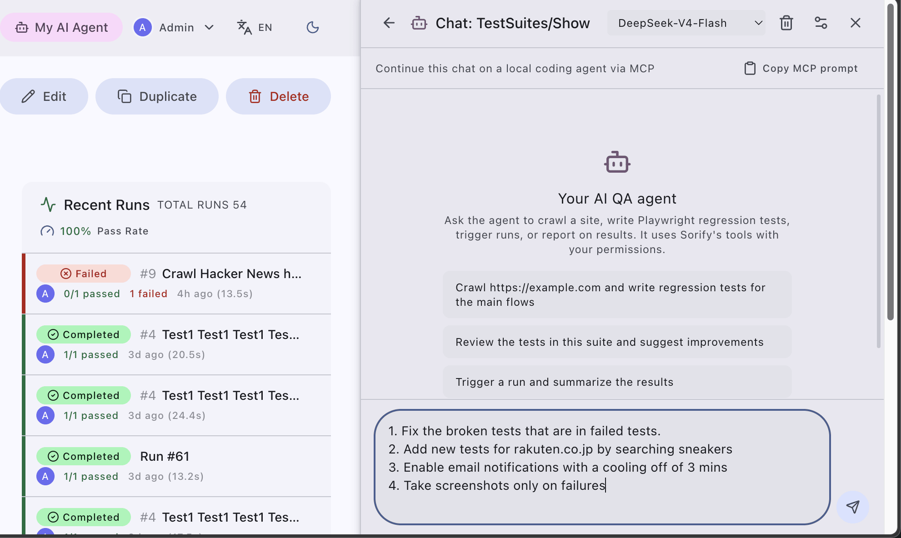
Page aware chat
The chat knows which page you are on and can call every Sorify tool.
- Ask about the suite you are looking at
- Same tools as your terminal agents
- Work moves between chat and terminal without getting lost
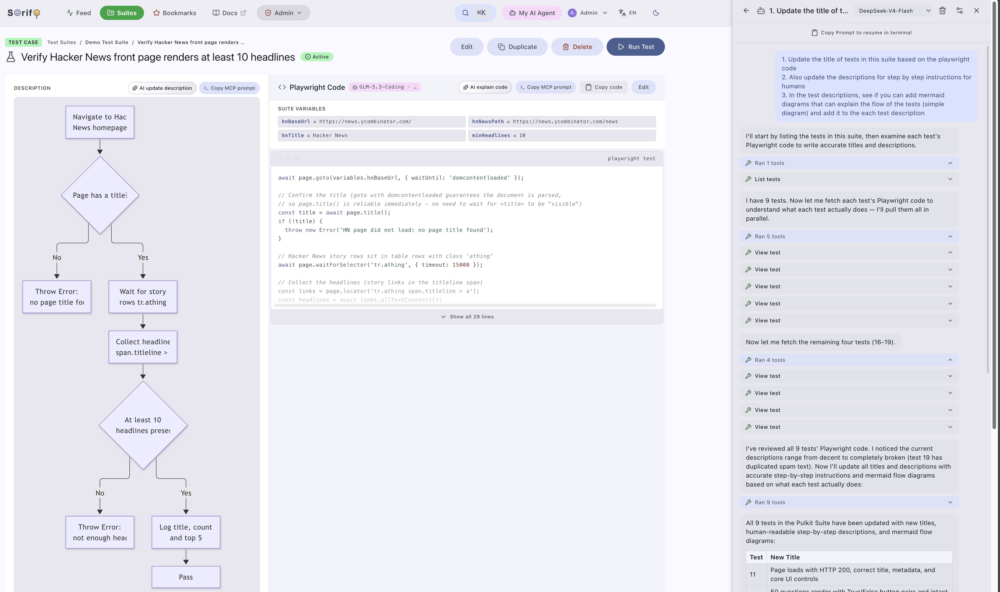
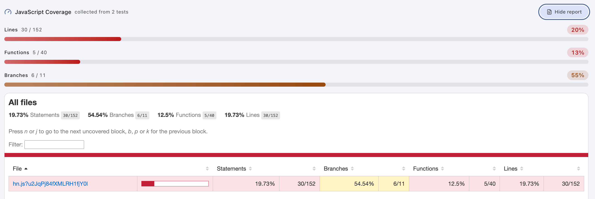
See what your tests actually covered
Sorify measures which parts of your frontend code the tests touched, so you know where you still have gaps.
- Coverage report right on the dashboard
- Export as LCOV for other tools
- Filter by bundle URL
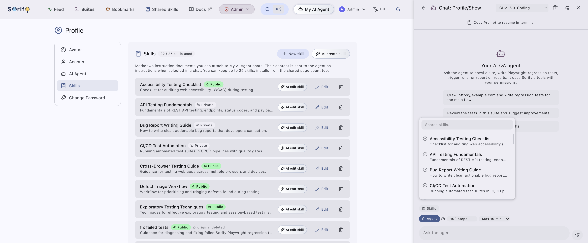
Write it once, reuse it everywhere
A skill is a saved set of instructions for agents, written in plain markdown. Teach it your testing style once, then reuse it on every project.
- Create, copy, and share skills with your team
- Attach them to local agents or the dashboard agent
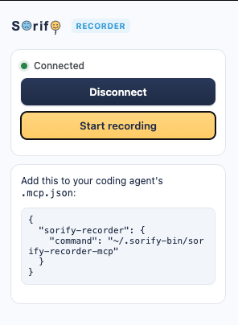
Record your clicks, get a test
Click through your site while the Chrome extension records. The recording becomes the test, and the AI fills in the details.
- Captures clicks, inputs, uploads, tabs, and network
- Works even better next to your source code
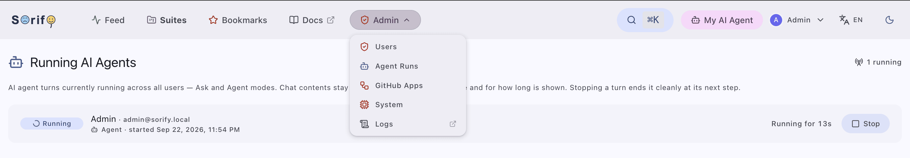
Run it like a product
An admin panel for the whole workspace, with user management, app logins, logs, and monitoring.
- Manage users, roles, and password resets
- OAuth login through GitHub apps
- Logs, monitoring, and a dashboard message
Every knob you need
Suites, schedules, webhooks, and integrations, all configurable from the settings pages.
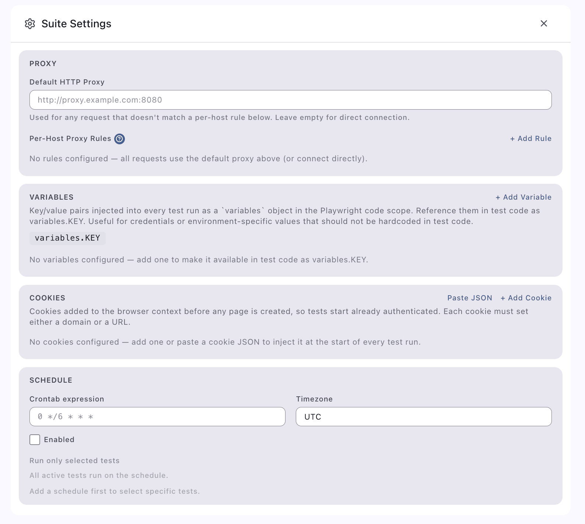
Each suite has its own settings
A suite is a folder of related tests. Its settings page holds the webhooks and integrations for just those tests.
- Integrations are set per suite
- Add members and share the suite
- Turn single tests on or off
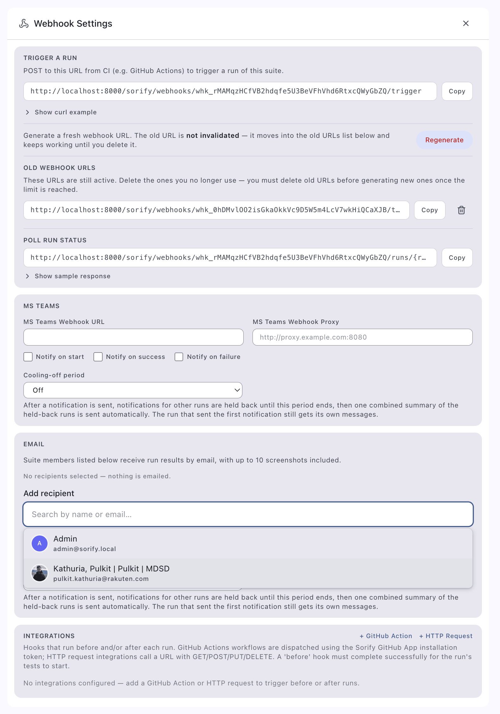
Let your pipeline start the tests
Every suite gets a CI webhook. Your pipeline calls it, and Sorify starts the run.
- A token does the auth, no login needed
- Run all tests, or pick just a few
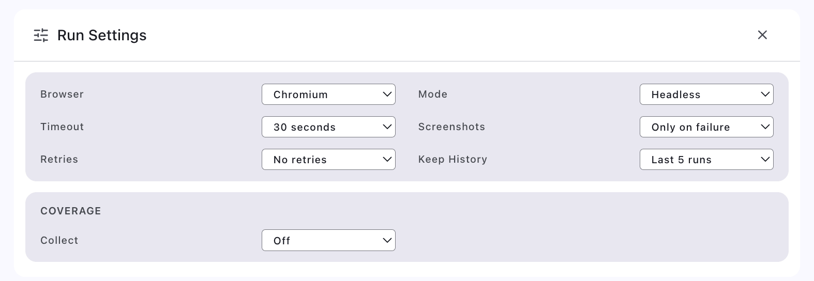
Runs, your way
Set the webhook URL and token, and choose how each run behaves.
- Run options per suite
- See who started each run, and when
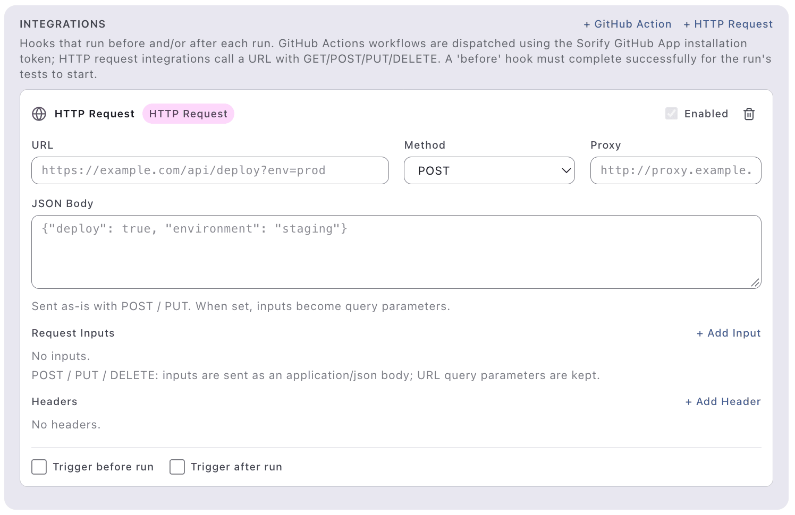
Call any service around a run
Prepare test data before a run, or collect the results after it.
- Works with any HTTP address
- Runs before or after each test run
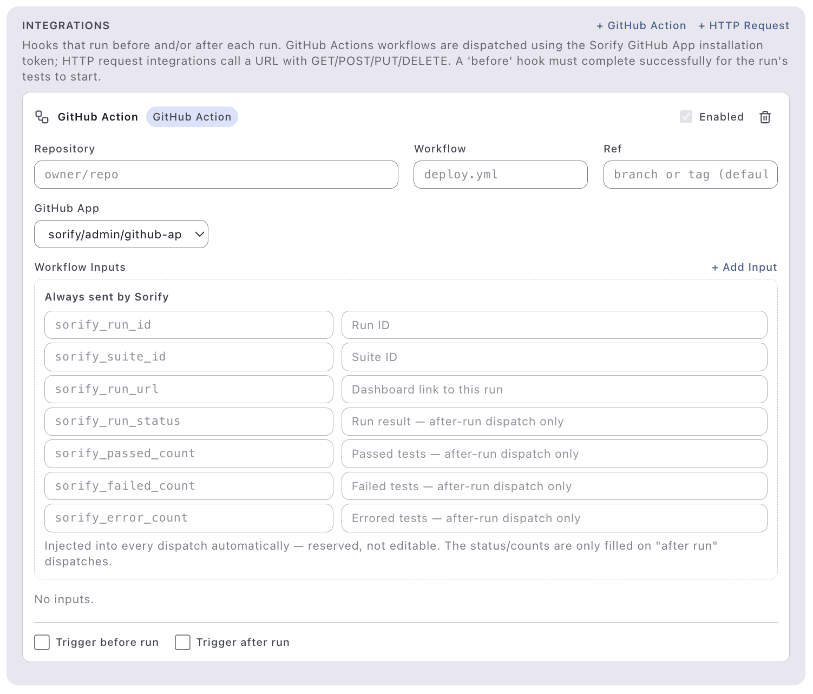
Start GitHub Actions from Sorify
Connect a GitHub App once. Then Sorify can start any of your workflows before or after a run.
- Set up from the admin panel
- The run details arrive as workflow inputs
Plays well with your tools
Sorify talks to your pipeline in both directions, through three kinds of webhooks.
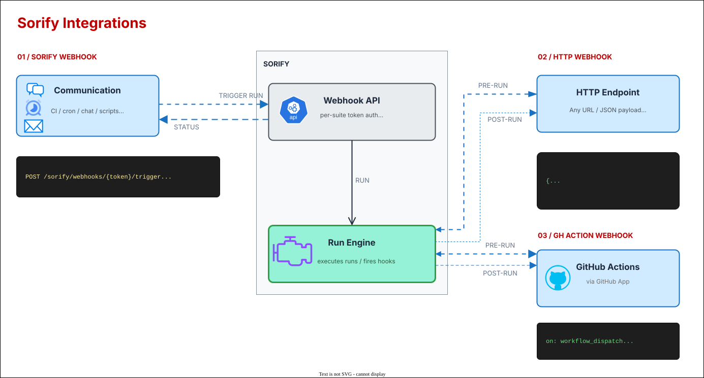
Get started
One command to run it on your own machine, with Docker.
-
1
Start Sorify.Run this in the project folder:$ docker-compose up
-
2
Open the dashboard.Go to http://localhost:8000/sorify and log in with the default admin account.
-
3
Connect your AI agent.Install the Sorify plugin for Claude or Codex, following the steps in the README.
-
4
Ask for your first test.Ask the agent to create a suite and test your site. Then run it and watch the dashboard.
For self hosting, ephemeral mode, and running from source, see the install guide. The full HTTP API is listed in API.md.